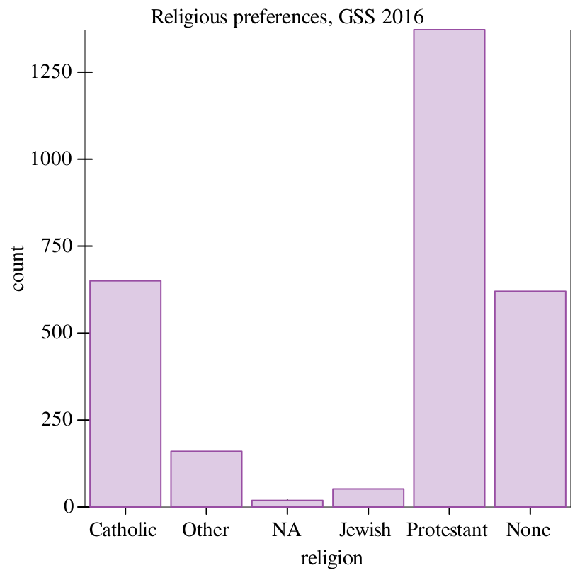
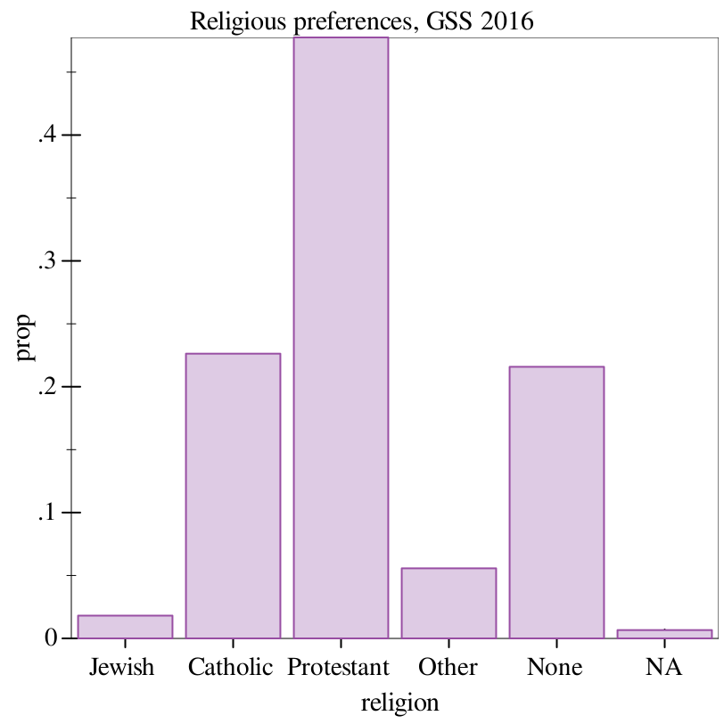
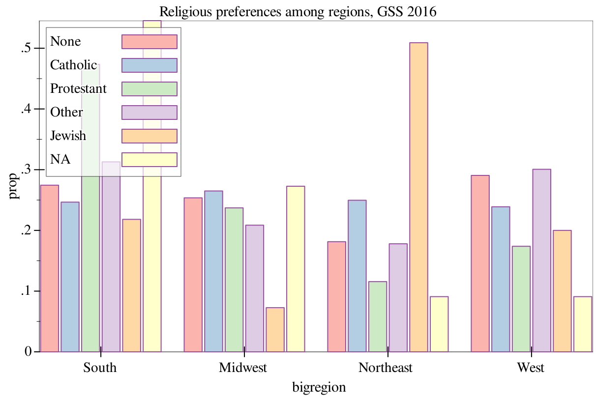
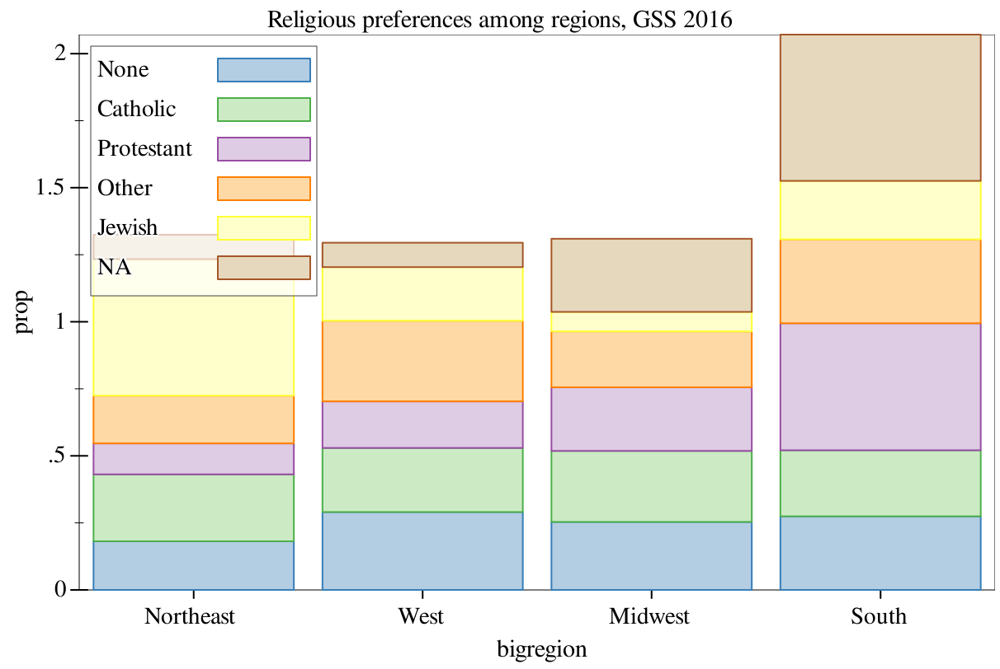

4 Bar charts
For this section, we’ll be using a CSV dump of the 2016 GSS (General Social Survey) from its respective R library, a dataset that sociologists continually manage to squeeze more and more insights out of. More importantly, the Gapminder dataset from the previous section has a lot of continuous variables (such as GDP per capita and life expectancy, which we worked with), but no categorical variables. The GSS has a wide variety of categorical variables to work with, making it ideal for making bar charts and histograms.
> (define gss (df-read/csv "data/gss_sm.csv")) > (show gss)
data-frame: 2867 rows x 33 columns
┌─────┬─────────┬─────────────┬────┬────────┬────────┐
│obama│grass │marital │kids│siblings│relig │
├─────┼─────────┼─────────────┼────┼────────┼────────┤
│0 │NA │Married │3 │2 │None │
├─────┼─────────┼─────────────┼────┼────────┼────────┤
│1 │Legal │Never Married│0 │3 │None │
├─────┼─────────┼─────────────┼────┼────────┼────────┤
│0 │Not Legal│Married │2 │3 │Catholic│
├─────┼─────────┼─────────────┼────┼────────┼────────┤
│0 │NA │Married │4+ │3 │Catholic│
├─────┼─────────┼─────────────┼────┼────────┼────────┤
│1 │Legal │Married │2 │2 │None │
├─────┼─────────┼─────────────┼────┼────────┼────────┤
│1 │Legal │Married │2 │2 │None │
└─────┴─────────┴─────────────┴────┴────────┴────────┘
2861 rows, 27 cols elided
(use (show df everything #:n-rows 'all) for full frame)
Clearly, we have a lot of data to work with here, but a lot of it is categorical – meaning we can make some bar charts!
> (graph #:data gss #:title "Religious preferences, GSS 2016" #:mapping (aes #:x "religion") (bar)) 
> (graph #:data gss #:title "Religious preferences, GSS 2016" #:mapping (aes #:x "religion") (bar #:mode 'prop)) 
> (graph #:data gss #:title "Religious preferences among regions, GSS 2016" #:mapping (aes #:x "bigregion" #:group "religion") #:width 600 #:height 400 (bar #:mode 'prop)) 
> (graph #:data gss #:title "Religious preferences among regions, GSS 2016" #:mapping (aes #:x "bigregion" #:group "religion") #:width 600 #:height 400 (stacked-bar #:mode 'prop)) 
But both of these methods of presentation, while they have their uses, are still difficult to read. Both of them require consulting the legend in order to determine the bar type, and furthermore, the stacked bar makes it somewhat difficult to compare different categories within each region. To remedy this, we need to introduce another concept...